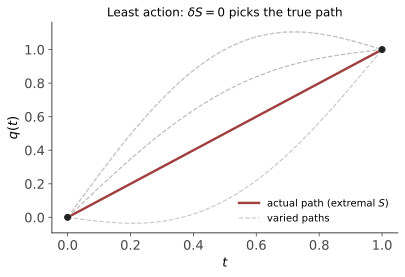

力学 II · 拉格朗日力学与变分原理
对标：Goldstein §1–2 / Landau Mechanics §1–2 ｜ 前置：mech-01、数分 V（变分预备）、优化 III（约束） 力学的第二种写法：不谈力，谈作用量——自然选择使 \(S = \int L\,dt\) 取极值的路径。这一页是理论物理的世界观奠基：广义坐标消约束、Euler–Lagrange 方程、以及物理学最深刻的定理之一——Noether：对称性 ⇒ 守恒律。
1. 从约束的烦恼到广义坐标
牛顿方程处理约束（摆的杆、斜面）要引入未知约束力——为不关心的量解方程。拉格朗日的出路：选广义坐标 \(q_1, \dots, q_n\)（恰好参数化允许的位形——约束自动满足：单摆用 \(\theta\) 而不是 \((x,y)\) + 杆长方程）。约束力从此隐身（理想约束不做虚功——D'Alembert 原理是通往 EL 方程的另一条路【引用】）。
2. 最小作用量原理与 Euler–Lagrange 方程

原理（Hamilton）：真实路径使作用量
在固定端点的路径变分下取驻值。
定理（Euler–Lagrange 方程）【推导】 \(\delta S = 0 \iff\)
推导（变分法基本引理三步）：取扰动 \(q + \epsilon\eta\)（\(\eta\) 端点为零），\(\frac{dS}{d\epsilon}\big|_0 = \int\big(\frac{\partial L}{\partial q}\eta + \frac{\partial L}{\partial\dot q}\dot\eta\big)dt\)；第二项分部积分（端点项因 \(\eta = 0\) 消灭）；对一切 \(\eta\) 为零 ⇒ 被积括号恒为零（基本引理——若 \(\int f\eta = 0\) 对一切光滑 \(\eta\) 则 \(f \equiv 0\)，反证用局部化的 bump 函数）。\(\blacksquare\)
对账：\(L = \frac12 m\dot{\mathbf r}^2 - V\) 代入 EL ⇒ \(m\ddot{\mathbf r} = -\nabla V\)——牛顿方程回收 ✓。但 EL 更强：形式在任意广义坐标下不变（推导没用到坐标的任何性质）——换坐标不用重推方程，这是它对牛顿框架的第一重碾压；第二重：只需写出标量 \(T, V\)，不用受力分析画图。
🔗 方法论出口：变分原理是物理的通用语法（光学 Fermat 原理、广相的测地线与 Einstein–Hilbert 作用量、场论的一切拉氏量——后面每门课的第一页都是"写下 \(L\)"）；数学侧它就是泛函极值（数分 V 的无穷维版），机器学习里"损失泛函 + 变分"的气质同源（如变分推断之名）。
3. Noether 定理（本页顶点）
定理（Noether 1918） 若作用量在单参数连续变换 \(q_i \to q_i + \epsilon\,K_i(q, t)\) 下不变（对称性），则
【推导】 对称性给 \(0 = \delta L = \sum\big(\frac{\partial L}{\partial q_i}K_i + \frac{\partial L}{\partial\dot q_i}\dot K_i\big)\)；用 EL 方程把 \(\frac{\partial L}{\partial q_i}\) 换成 \(\frac{d}{dt}\frac{\partial L}{\partial\dot q_i}\)：整个表达式合并成全导数 \(\frac{d}{dt}\big(\sum\frac{\partial L}{\partial\dot q_i}K_i\big) = 0\)。\(\blacksquare\)（时间平移对称需带边界项的推广版，结论 = 能量守恒【骨架】。）
三大守恒律的出身表（mech-01 的悬案一次结清）：
| 对称性 | 变换 | 守恒量 |
|---|---|---|
| 空间平移不变 | \(\mathbf r \to \mathbf r + \epsilon\hat{\mathbf n}\) | 动量 |
| 空间旋转不变 | 绕轴转 \(\epsilon\) | 角动量 |
| 时间平移不变 | \(t \to t + \epsilon\) | 能量 |
读法：守恒律不是巧合，是时空对称性的直接后果——"为什么能量守恒"的终极答案是"物理定律今天和明天一样"。这条定理统治后面的一切：场论的荷守恒（qft-01）、粒子物理的规范对称（pp-01）、乃至"能量在膨胀宇宙中不守恒"（宇宙学——时间平移对称破缺，cosmo-01 的伏笔）。🔗 ML 侧回声：等变网络（ai 课 05 CNN 平移等变的推广）正是"把 Noether 的对称性哲学搬进架构设计"。
4. 实战：拉格朗日方法的流水线
流程：选广义坐标 → 写 \(T, V\)（标量，随便什么坐标）→ EL 方程 → （能找对称性先收守恒量）。
样板（单摆，30 秒）：\(L = \frac12 ml^2\dot\theta^2 + mgl\cos\theta\) ⇒ EL：\(\ddot\theta = -\frac gl\sin\theta\)——不画受力图、不算杆的张力。
样板（双摆，牛顿框架的噩梦、拉氏框架的作业题）：两个角度坐标、写 \(T\)（含交叉项）与 \(V\)，EL 给两条耦合方程——混沌系统的标准入口（ode-03 的混沌一嘴在此有了具体主角）。
5. 练习与要点
例 1（循环坐标） \(L\) 不含某 \(q_k\)（"循环坐标"）⇒ EL 直接给 \(\frac{\partial L}{\partial\dot q_k}\) 守恒——Noether 的最速特例；中心力场 \(L = \frac12m(\dot r^2 + r^2\dot\theta^2) - V(r)\) 中 \(\theta\) 循环 ⇒ \(mr^2\dot\theta = L\) 角动量守恒（mech-01 的结果一行再得）。
例 2（约束的杠杆） 珠子沿旋转铁丝圈（角速度 \(\omega\)）滑动：一个坐标 \(\theta\)，\(L = \frac12 ma^2\dot\theta^2 + \frac12ma^2\omega^2\sin^2\theta + mga\cos\theta\)——离心效应自动出现在有效势里，EL 一步给动力学；牛顿框架需在旋转系里补两种惯性力。
例 3（Fermat = 力学的光学孪生） 光走时间泛函 \(\int\frac{n\,ds}{c}\) 的极值路径：变分给折射定律（Snell）——"自然界的极值原理"跨领域重演；这条类比历史上直接启发了量子力学的路径积分（aqm-03 收线）。\(\blacksquare\)
下一页：再换一次坐标——把 \(\dot q\) 换成动量 \(p\)：哈密顿力学，相空间的几何学与泊松括号，量子力学与统计物理的共同门厅。